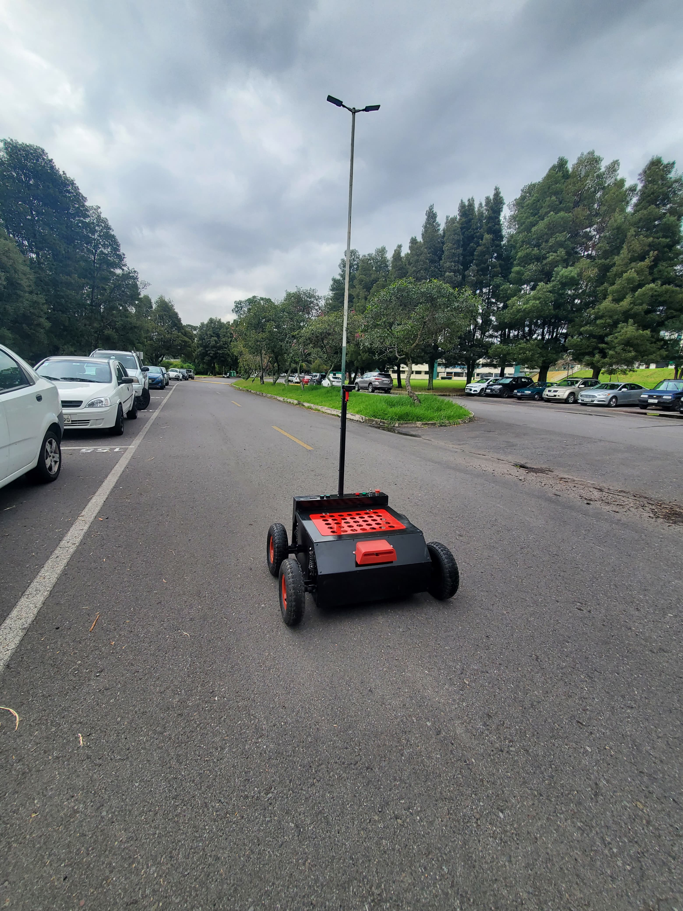

IA Edge & Navegación Autónoma
Robot Autónomo de Bajo Costo (Nexus)
Desarrollo avanzado de navegación autónoma basado en visión monocular e inteligencia artificial en el borde (Edge AI), implementando redes neuronales optimizadas y control predictivo en tiempo real.

Prototipo físico equipado con Jetson Orin Nano y cámara monocular
Depuración completa de navegación y estimación de ruta (Ruta 50)
Pruebas operativas y demostración de despliegue en campo
Arquitectura y Especificaciones Técnicas
- Computación de Bordo (Edge AI): Potenciado por una Jetson Orin Nano (8GB), encargada de ejecutar todo el pipeline de inferencia de deep learning y control en tiempo real con alta eficiencia energética.
- Sistema Sensorial Monocular: Utiliza una única cámara monocular como sensor principal para la percepción visual del entorno, reduciendo drásticamente los costos de hardware frente a sistemas LiDAR tradicionales.
- Percepción y Visión Artificial: Integración de dos redes neuronales TwinLiteNet con fine-tuning personalizado para segmentación de caminos, combinadas con un modelo de detección YOLOv11n modificado y reentrenado específicamente para 10 clases de objetos.
- Control y Navegación Avanzada: Estrategia de control híbrida que combina un Controlador Predictivo Basado en Modelo (NMPC) para la optimización de trayectorias y un control PID robusto para la estabilización y seguimiento preciso de los actuadores.